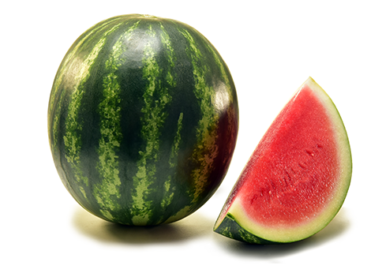
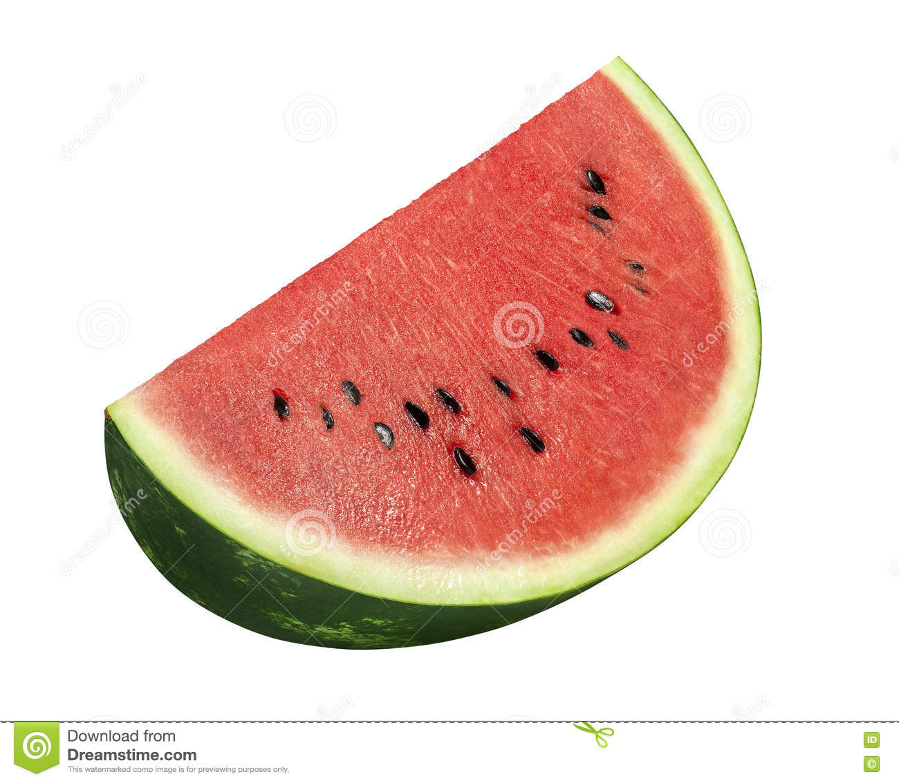
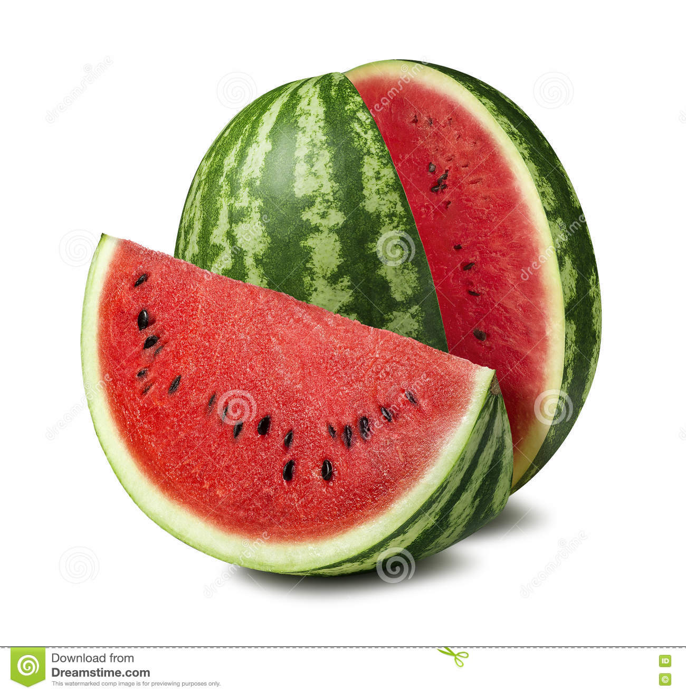

Melancia (Citrullus lanatus) é uma planta da família Cucurbitaceae e também o nome do seu fruto. Trata-se de uma trepadeira rastejante originária da África.
Originária das regiões secas, tem um centro de diversificação secundário no sul da Ásia. A domesticação ocorreu na África Central, onde a melancia é cultivada há mais de 5000 anos. No Egito e no oriente médio é cultivada há mais de 4000 anos.[1] Na China, a cultura foi introduzida por volta do século X; na Europa, por volta do século XIII; e na América, no século XVI.[2] Foi trazida para o Brasil por negros de origem Banto e Sudanesa no processo de escravidão.[3] O termo arcaico do português para se referir à fruta é "balancia" ou "belancia".[4]
  Fotos de melancia
Beatriz ribeiro, 29/10